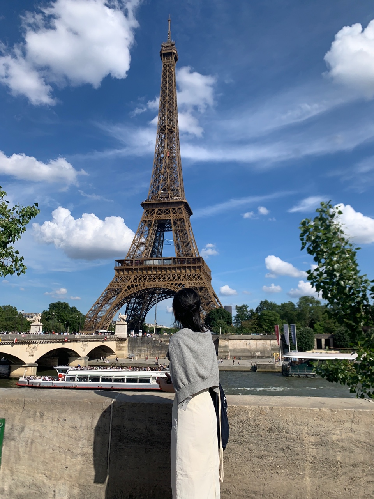
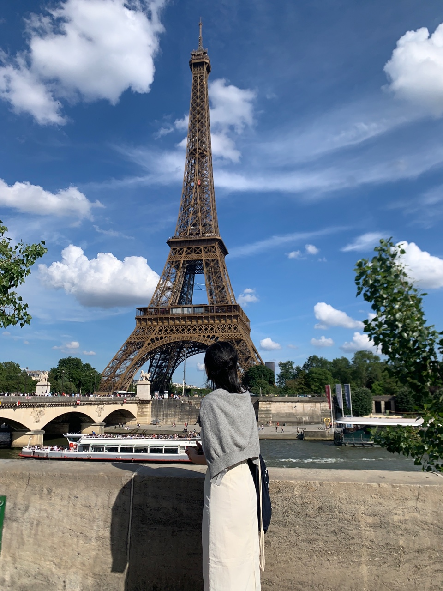

인생 책 - 공룡의 이동 경로

공룡의 이동경로는 사람들이 살아가면서 겪는 다양한 인간관계에 대해 다룬 책입니다. 그 다양한 일들 속에서 느끼는 허탈함과 속상함의 나만의 것이 아니라 모두가 겪는 자연스러운 일이라는 것을 생각하게 해줘서 위로가 됐던 책이에요!
안녕하세요, 히로입니다!
저는 원래 안정감을 최상의 가치로 여기고, 새로운 시도를 두려워하는 사람이었어요. 익숙하지 않은 상황을 피하려 했고, 심지어 새로운 식당에 가는 게 겁이 나서 가던 곳만 가는 사람이었죠.
하지만 2024년, 6개월 동안 영국에서 살 기회가 생기면서 제 삶에 큰 변화가 찾아왔어요. 처음으로 축구 경기를 보러 가고, 혼자 다른 나라로 여행을 떠나는 등 다양한 도전을 해봤어요. 그렇게 조금씩 두려움을 극복해 나가면서, 새로운 경험을 즐길 수 있는 사람이 되어갔어요.
영국에서 돌아온 후에도 그 변화는 계속됐어요. 처음으로 야구 경기를 보러 가고, 콘서트와 영화제에 가보면서 도전을 재미로 받아들이기 시작했어요. 그리고 늘 망설이기만 했던 우테코에도 용기를 내어 지원했고, 합격이라는 값진 결과를 얻을 수 있었어요.
2024년은 저에게 ‘도전’의 가치를 깨닫게 해 준, 정말 뜻깊은 한 해였어요. 앞으로도 새로운 경험을 즐기며 계속 성장해 나가고 싶어요! 😊
 



공룡의 이동경로는 사람들이 살아가면서 겪는 다양한 인간관계에 대해 다룬 책입니다. 그 다양한 일들 속에서 느끼는 허탈함과 속상함의 나만의 것이 아니라 모두가 겪는 자연스러운 일이라는 것을 생각하게 해줘서 위로가 됐던 책이에요!

징크스라는 부정적인 단어를 긍정적인 생각으로 바꾸게 해줬던 노래에요! 징크스는 사소한 습관과 버릇이고, 이로 인해서 각자의 삶의 방식이 달라진다고 이야기해서 좋아해요. 긍정적인 가사를 가진 노래라서 좋아합니다. 저도 긍정적인 생각을 많이 많이 하고 싶어요.
감상평